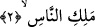

unutulduğuna işâret vardır. Eğer insan bu ahdi unutmasaydı, dönmeye ve rücû etmeye
ihtiyaç duymaz bilakis dâima Allah’ın himâyesinde olurdu.
2. İnsanların Melikine (mutlak sâhip ve hâkimine) sığınırım!
“Meliki’n-nâs “İnsanların Melik’ine” ifâdesi, atf-ı beyândır. Allah Teâlâ’nın
insanları terbiye etme yolunun diğer kralların mülklerinde emirleri altında bulunanları
terbiye etmesi gibi olmadığını, bilakis kâmil bir mülk, herşeyi kaplayan bir tasarruf ve
herşeye gâlip gelen bir otorite yoluyla olduğunu beyân etmek için getirilmiştir.
Mâlik değil de Melik denmesinin sebebi olarak Mâlik, kulun sâhib ve mâliki olması
bakımından mutlak tasarruf ifâde eder, Melik’in tasarrufu ise zorlama ve siyâset gibi
farklı bazı açılardan olduğundan mukâyese sahih değildir. Böyle bir mukâyese Hak
Teâlâ ile değil de mahlûkât ile alâkalı olarak sahih olabilir. Çünkü Allah Teâlâ için
kullanılan melik kelimesi mutlak tasarruf ve her açıdan mülkiyet ifâde ettiğinden
başkasının melik oluşu Allah Teâlâ’ya kıyaslanamaz. Sıfat ve isimler ancak en kâmil
mânâsıyla Allah Teâlâ’ya izâfe edilebilir. Melik kelimesinin mâlik kelimesine tercih
edilmesinin vecihlerinden biri de hadîs-i şeriflerin Kur’ân-ı Kerîm’in esrârını
açıklıyor, ona tenbihte bulunuyor olmasıdır. Efendimiz’in duâlarından olan bir hadîs-i
şerîfte şöyle denilmektedir:
“Gökleri ve yeri, görünen ve görünmeyen âlemleri yaratan Allah’ım! Ey her şeyin
Rabbi ve sâhibi!...)[278] Bu hadiste “Melik” denilmemiş “Melîk” denilmiştir. Yine
müstakil isimler muzâf olan isimlere mukaddemdir. Melîk ismi de Mâlik isminin
hilâfına müstakil olarak vârid olmuştur. Muzâf olarak kullanılan isimlerin esmâ-i hüsnâ
arasında sayılmaması da bunu desteklemektedir. “Fâliku’l-ısbâh” (karanlığı yaran)
[En‘âm 6/96],
“Zi’l-meâric” (Yükselme yollarının sâhibi) [Meâric, 70/3] ve benzeri isimler bu
kabîldendir. Yine büyük kıyâmette ve hayat yolunda yürüyenlerin yolculuk bitip rûh
bedenden çekilirken hedefe ulaştıklarına kesin kanâat getirdikleri sırada yaşadıkları
küçük kıyâmette, son kertede ahadiyyet kesrete gâlip gelirken Allah Teâlâ şöyle
buyurur: “Bugün mülk kime âiddir? Bir ve Kahhâr olan Allah’a…” (Mü’min, 40/17)
Mülkün hâkimi melik olmaktadır. Dolayısıyla bu âyet melik lafzının daha tercihe şâyân
olduğunu göstermektedir. Tekrârdan kaçınmak için bu sûrede değil de sâdece Fâtiha
sûresinde melik ve mâlik okuyuşlarını câiz görmüşlerdir. Dilde Rabb isminin
mânâlarından biri de “Mâlik”tir. Bu durum Fâtiha’da aynı anlamda iki lafzın bir arada